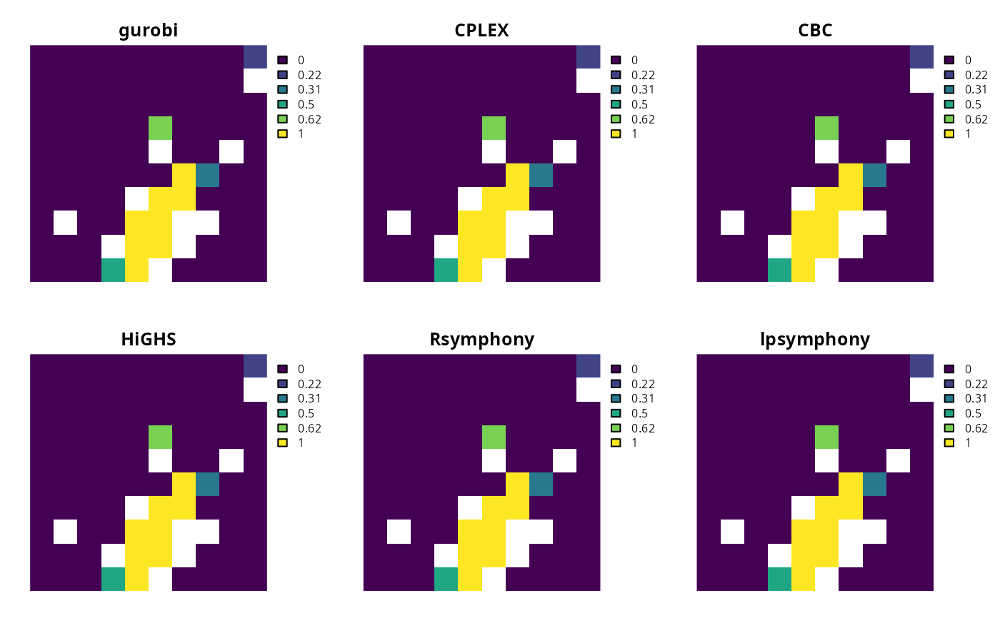

Specify the software and configuration used to solve a conservation planning problem. By default, the best available software currently installed on the system will be used. For information on the performance of different solvers, please see Schuster et al. (2020) for benchmarks comparing the run time and solution quality of some of these solvers when applied to different sized datasets.
Details
The following solvers can be used to find solutions for a
conservation planning problem():
add_default_solver()This solver uses the best software currently installed on the system.
add_gurobi_solver()Gurobi is a state-of-the-art commercial optimization software with an R package interface. We recommend using this solver if at all possible. It is by far the fastest of the solvers available for generating prioritizations, however, it is not freely available. That said, licenses are available to academics at no cost. The gurobi package is distributed with the Gurobi software suite. This solver uses the gurobi package to solve problems.
add_cplex_solver()IBM CPLEX is a commercial optimization software. It is faster than the open source solvers available for generating prioritizations, however, it is not freely available. Similar to the Gurobi software, licenses are available to academics at no cost. This solver uses the cplexAPI package to solve problems using IBM CPLEX.
add_cbc_solver()CBC is an open-source mixed integer programming solver that is part of the Computational Infrastructure for Operations Research (COIN-OR) project. Preliminary benchmarks indicate that it is the fastest open source solver currently supported. We recommend using this solver if both Gurobi and IBM CPLEX are unavailable. It requires the rcbc package, which is currently only available on GitHub.
add_highs_solver()HiGHS is an open source optimization software. Although this solver can have comparable performance to the CBC solver for particular problems and is generally faster than the SYMPHONY based solvers (see below), it sometimes can take much longer than the CBC solver for particular problems.
add_lpsymphony_solver()SYMPHONY is an open-source mixed integer programming solver that is also part of the COIN-OR project. Although both SYMPHONY and CBC are part of the COIN-OR project, they are different software. The lpsymphony package provides an interface to the SYMPHONY software, and is distributed through Bioconductor. We recommend using this solver if the CBC and HiGHS solvers cannot be installed. This solver can use parallel processing to solve problems, so it is faster than Rsymphony package interface (see below).
add_rsymphony_solver()This solver provides an alternative interface to the SYMPHONY solver using the Rsymphony package. Unlike other solvers, the Rsymphony package can be installed directly from the Comprehensive R Archive Network (CRAN). It is also the slowest of the available solvers.
References
Schuster R, Hanson JO, Strimas-Mackey M, and Bennett JR (2020). Exact integer linear programming solvers outperform simulated annealing for solving conservation planning problems. PeerJ, 8: e9258.
See also
Other overviews:
constraints,
decisions,
importance,
objectives,
penalties,
portfolios,
summaries,
targets
Examples
# \dontrun{
# load data
sim_pu_raster <- get_sim_pu_raster()
sim_features <- get_sim_features()
# create basic problem
p <-
problem(sim_pu_raster, sim_features) %>%
add_min_set_objective() %>%
add_relative_targets(0.1) %>%
add_proportion_decisions()
# create vector to store plot names
n <- c()
# create empty list to store solutions
s <- c()
# if gurobi is installed: create problem with added gurobi solver
if (require("gurobi")) {
p1 <- p %>% add_gurobi_solver(verbose = FALSE)
n <- c(n, "gurobi")
s <- c(s, solve(p1))
}
#> Loading required package: gurobi
#> Loading required package: slam
# if cplexAPI is installed: create problem with added CPLEX solver
if (require("cplexAPI")) {
p2 <- p %>% add_cplex_solver(verbose = FALSE)
n <- c(n, "CPLEX")
s <- c(s, solve(p2))
}
#> Loading required package: cplexAPI
# if rcbc is installed: create problem with added CBC solver
if (require("rcbc")) {
p3 <- p %>% add_cbc_solver(verbose = FALSE)
n <- c(n, "CBC")
s <- c(s, solve(p3))
}
#> Loading required package: rcbc
# if highs is installed: create problem with added HiGHs solver
if (require("highs")) {
p4 <- p %>% add_highs_solver(verbose = FALSE)
n <- c(n, "HiGHS")
s <- c(s, solve(p4))
}
#> Loading required package: highs
# create problem with added rsymphony solver
if (require("Rsymphony")) {
p5 <- p %>% add_rsymphony_solver(verbose = FALSE)
n <- c(n, "Rsymphony")
s <- c(s, solve(p5))
}
#> Loading required package: Rsymphony
# if lpsymphony is installed: create problem with added lpsymphony solver
if (require("lpsymphony")) {
p6 <- p %>% add_lpsymphony_solver(verbose = FALSE)
n <- c(n, "lpsymphony")
s <- c(s, solve(p6))
}
#> Loading required package: lpsymphony
# plot solutions
names(s) <- n
plot(terra::rast(s), axes = FALSE)

# }